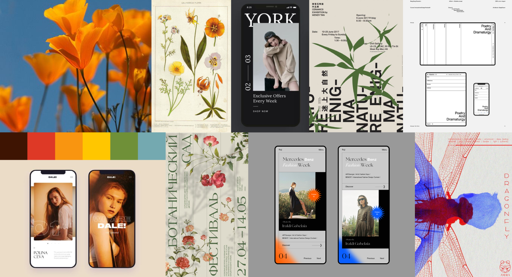
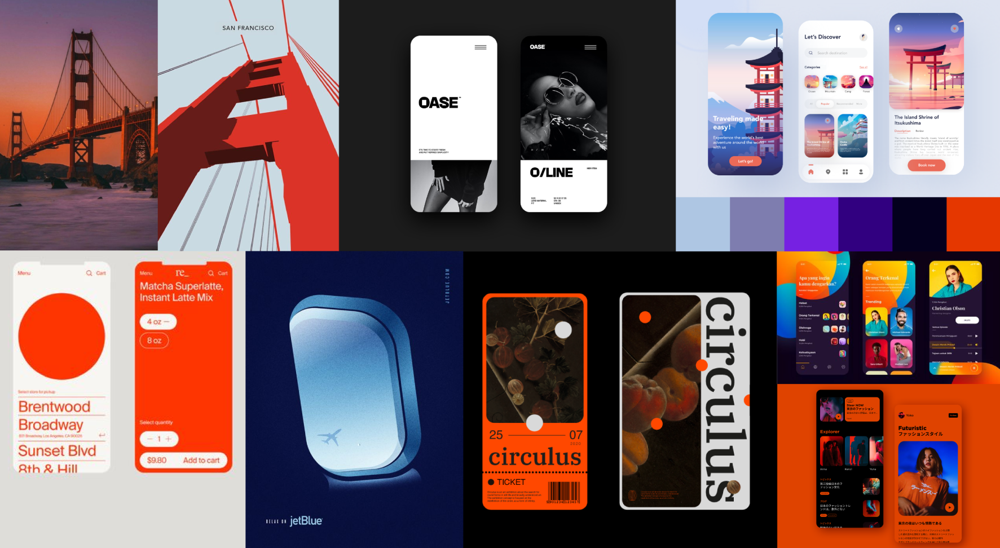
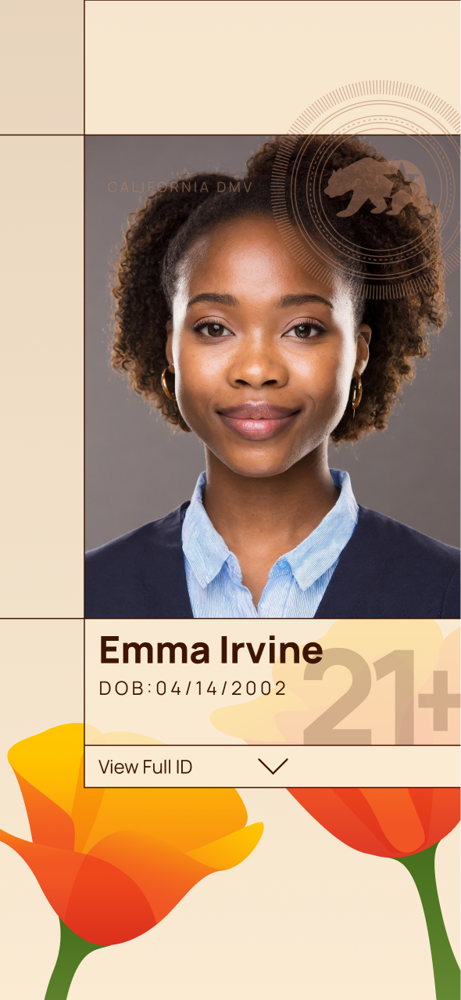
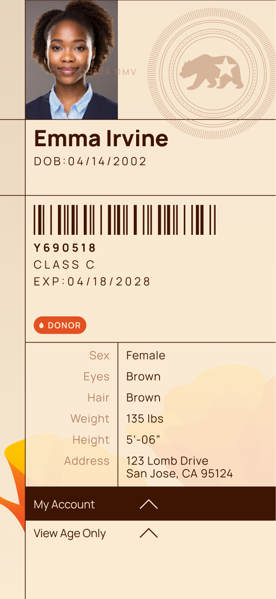
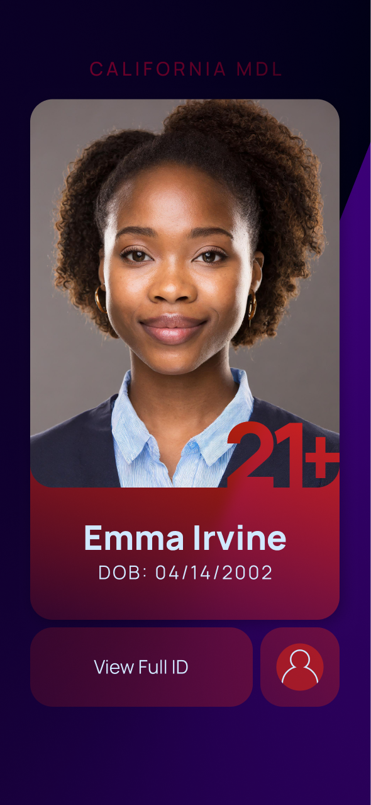
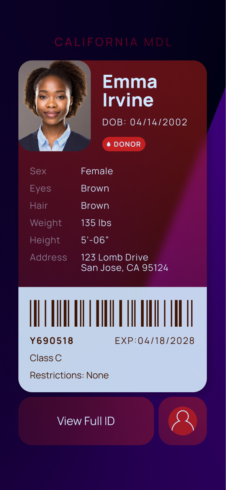

Synopsis — In the age of technology, digitized licenses offer convenience and security, yet remain underutilized. For this project, I developed a user interface for a California digital driver's license with two main features: age verification, and a full ID.
This Digital ID prototype serves as an Age Verification tool and as a Full License. Throughout the development process, I kept two goals in mind:
Functionality: maintain the security and authenticity of physical IDs, while keeping the app intuitive and easy to use.
Personality: create a beautiful and memorable experience that is representative of California.
Competitive Analysis
Various platforms, such as states DMVs and Apple/Samsung digital wallets, have digital IDs currently implemented or in the works. But most fall short in at least one aspect.
For example, the California DMV Wallet (pictured below) offers a very generic app interface, which fails to utilize the full space, and does not create any visual/emotional impact.
For more analysis examples, you can take a look at the deck.
Sketches: Exploring Movement
The process was very exploration-heavy, and that began with aesthetic development in two distinct moodboards, each of which I implemented in my structural wireframes.
Style
The process was very exploration-heavy, and that began with aesthetic development in two distinct moodboards, each of which I implemented in my structural wireframes.
Moodboard 1 — Peaceful Poppies
keywords: muted, floral, illustrative, calming
Inspired by the state flower, a stylized, floral design offers more personality and a friendly touch—true to the California spirit.

Moodboard 2 — City Nights
keywords: modern, night life, vibrant, moody
Dark, crisp graphics with vibrant accents represent the liveliness of city, echoing the app's purpose of identity verification via the night-life color palette.

Development
Using my moodboards, I implemented each visual direction into my wireframes to create my first round of prototype compositions.




Then I consolidated the best aspects of both designs into my second draft. I decided to lean into the floral concept of my first style, combined with the rich vibrancy and smoothness of my second style.
The navigation featured a card-based home screen that led to each of the two subpages; the user could also swipe horizontally between subpages, or exit back to the home screen.
While it was a successful implementation, the home screen was overcomplicated for use with just two cards. In my final round of designs, I reconsidered this gesture interaction system and removed the home screen entirely.
Final Design
The final design contains one title screen and one detail screen for each of Age Verification and Full License. I opted a warmer color scheme of orange and green, with a focus on one color in each section to keep them visually distinct but unified.
Style Guide
Navigation & Privacy
One of the main considerations throughout this project was at what point to reveal sensitive information. How many layers of interaction between launch and the user's age? The user's address?
I decided to have the app launch to the Age Verification title screen, with horizontal swiping between title screens and vertical swiping to open the more private information.
As always, if you're looking for more on the project, take a peek at the deck!